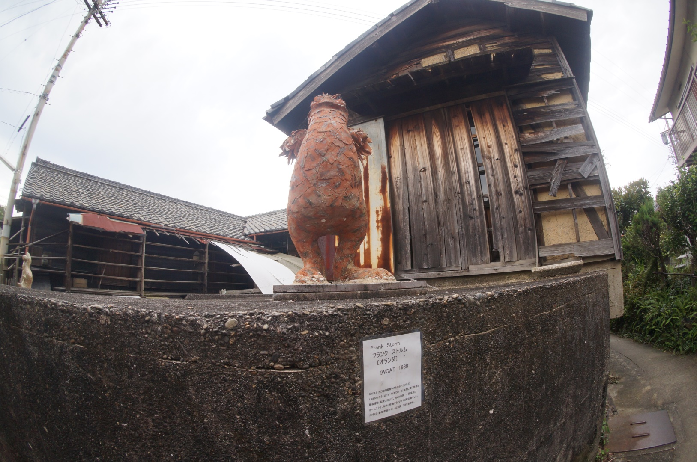

도코나메 도자기 마을 (常滑焼の村)
도코나메 도자기 마을은 도자기를 굽던 유명한 마을이라고 합니다. 거리 골목골목에는 옛스러운 일본 전통집이 많은데 일본의 특유의 아기자기함을 느길수 있엇다.
고양이 조형물들을 지나 코너를 돌면 도자기 마을이 본격적으로 시작된다. 옛 거리가 인상적이고 조그만 도자기 상점들이 있다. 오래된 가마(?)도 있다. 상점들 안에 들어가서 아기자기 한 기념품이나 그릇, 컵, 잔 등을 구경하는 재미도 쏠쏠하다. 가끔 사고 싶은 것들이 있으면 사고~!